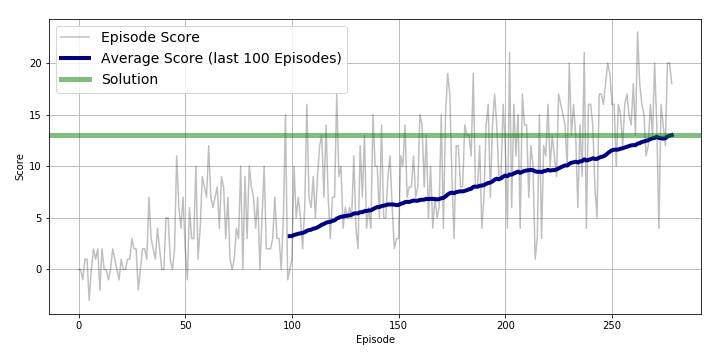

## Learning Algorithm
Source code of learning algorithm is placed in main/ directory. The algorithm is composed mainly of next three parts.

#### Double DQN
The reinforcement learning algorithm Double DQN (DDQN) is implemented. Hidden layers are composed of State -> 64 -> LeakyReLU -> 64 -> LinearReLU -> Action. The optimizer is ADAM. 

#### Experience Replay
Experience Replay is also implemented. In this technique, D-DQN model is trained by mini-batch from replay buffer.

#### Epsilon Greedy
Agent select next action based on Epsilon Greedy. At probability epsilon, agent select at random from action space. The value of epsilon is set 1, and decrease at a rate of epsilon_decay = 0.95 with time until 0.000001.

## Agent Results
This is plot of rewards when training. At Episode 278, agent performance met the criteria and stopped training. (mean scores of last 100 episodes is above +13). 

<p align="center">
  
</p>

